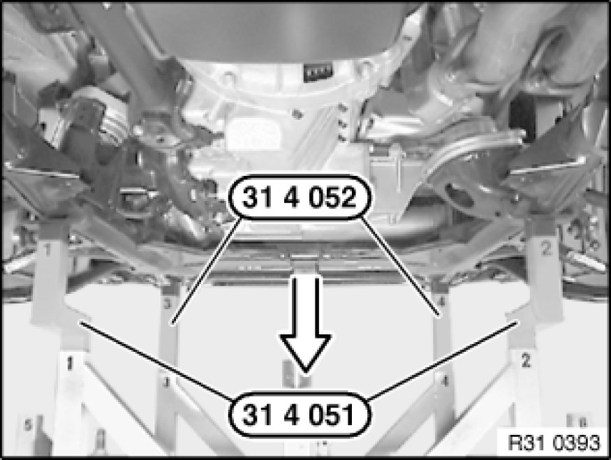
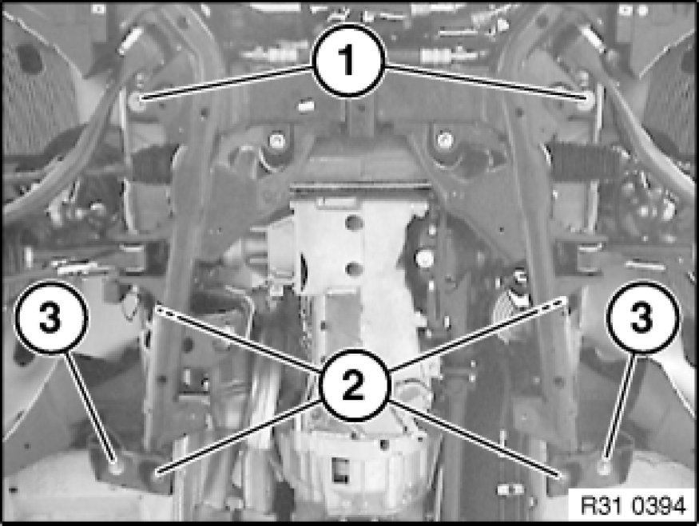

Lowering/Raising Front Axle Carrier
31 11 506 - Lowering/raising front axle carrier

Special tools required:
- 00 2 040 00 2 040 Basic Take-Up Fixture
- 31 4 051
- 31 4 052 31 4 050 Take-Up Set
- 33 3 274 33 3 270 Set of Supports

Warning!
Danger to life!
Secure engine in installation position to prevent it from falling down.

Necessary preliminary tasks:
- Secure engine in installation position
- If necessary, remove assembly underside protection
- Remove reinforcement plate Service and Repair
- If necessary, remove steering gear cover on both sides
- Partially detach front wheel arch trim Service and Repair on both sides in rear area
- Remove double pivot of lower steering spindle from power steering gear Removing And Installing/Replacing Double Joint With Flexible Disk
- If necessary, disconnect plug connection from EH converter and remove line from front axle carrier
- If necessary, disconnect plug connection from ride-height sensor and remove line from front axle carrier
- If necessary, disconnect vacuum line of electrically operated valve at T-piece
Warning!
Danger of injury!
Failure to comply with the following instructions may result in the vehicle slipping off the lifting platform and critically injuring other persons.
When supporting components, make sure that
- the vehicle can no longer be raised or lowered
- the vehicle does not lift off the locating plates on the lifting platform

If necessary, position special tool 00 2 040 00 2 040 Basic Take-Up Fixture with a 2nd person helping on workshop jack.
Insert special tools 31 4 051 and 31 4 052 31 4 050 Take-Up Set into corresponding mountings of special tool 00 2 040 00 2 040 Basic Take-Up Fixture.
Align special tool 00 2 040 00 2 040 Basic Take-Up Fixture to front axle subframe.
If necessary, lower special tool 33 3 274 33 3 270 Set of Supports.
Support front axle subframe by raising special tool 00 2 040 00 2 040 Basic Take-Up Fixture.

Important!
Pay attention to power steering hoses and lines when lowering and raising. Hoses/lines must not be kinked/tensioned/bent!

Release screws (1).
Tightening torque 31 10 2AZ Front Axle Suspension.
Release screws (2, 3).
Tightening torque 31 10 3AZ Front Axle Suspension.
If necessary, disconnect pressure line for power steering from front axle carrier.
Lower front axle carrier.
Installation Note:
Check threads for damage; if necessary, repair with Helicoil thread inserts Service and Repair.
Replace all bolts.
Tighten down bolts (1) and then bolts (2, 3).
After installation:
- Carry out steering angle sensor adjustment Adjustments